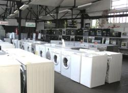
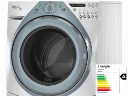
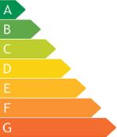

Характеристики классов энергопотребления


С 1 января 2011 года, приобретаемая нами бытовая техника, должна иметь обозначение класса эффективности энергопотребления. То есть, в паспорте прибора или на корпусе, должна присутствовать этикетка определенного цвета, с буквенным указанием класса энергетической эффективности.
Буквой А, на ярко-зеленом фоне, маркируется техника с наиболее высоким показателем эффективности энергопотребления. Маркировка В, означает более низкую энергоэффективность и изображается на светло-зеленом фоне.
Далее следуют буквы С, D, F, G и цветовая гамма меняется от зеленого до желтого(D) и до ярко-красного (G), показывающая самую низкую эффективность энергопотребления. Также существуют дополнительные классы А+, А++, это приборы энергетическая эффективность которых, выше чем у класса А.
Согласно постановлению правительства №1222, обязательной маркировке подлежат следующие виды бытовых приборов: холодильники, морозильники, стиральные машины, кондиционеры, электроплиты, электродуховки, посудомоечные машины, микроволновые печи, телевизоры, отопительные электрические приборы, электрические водонагреватели, лампы.
Так что же фактически обозначают эти цифры, и как данный показатель рассчитывается? Попробуем разобраться.
Сложность состоит в том, что для различных видов бытовой техники, этот показатель складывается из разных параметров.

Для электродуховок, показатель класса зависит от объема духовой камеры и мощности. Здесь различают духовки малого, среднего и большого объемов. Показатель изменяется пропорционально объему: класс А, для малого объема, 0,6 кВт/ч, среднего 0,8 кВт/ч, большого 1,0. Соответственно, G = 1,6, 1,8 , 2,0 кВт/ч и более, для разных объемов.
Для посудомоечных машин расчет ведется отдельно для определения класса эффективности мытья и класса эффективности сушки.
Показатель энергоэффективности для кондиционеров определяется отношением индекса производительности холода к фактическому потреблению электроэнергии в процессе охлаждения.
Для холодильников индекс эффективности вычисляют из отношения фактического потребления электроэнергии к стандартному, определенному опытным путем. Для класса А , это 55% и ниже, а свыше 125% начинается класс G.
Класс эффективности энергопотребления микроволновых печей, соответствует коэффициенту полезного действия прибора.
У телевизоров этот показатель складывается из отношения потребляемой мощности к площади экрана.
Таким образом, независимо от способа нахождения, индекс энергопотребления определяет эффективность работы вашего прибора.
Обязательное обозначение класса энергетической эффективности бытовой техники. Чем это грозит потребителю?
Выбирая бытовую технику, потребитель обращает внимание на цену, качество, характеристики, заявленные изготовителем, торговую марку. Как мы уже выяснили, важным показателем, который следует учитывать при покупке любого электроприбора, является класс энергопотребления (класс энергетической эффективности).

На российском рынке такая продукция присутствует давно, но указывать класс энергопотребления, до недавнего времени, производители были не обязаны. Но, после принятия в 2009 году закона об энергопотреблении, и разработки постановления №1222, где перечислены товары, подлежащие обязательной маркировке по классу энергопотребления, фирмам-производителям необходимо, с 1 января 2011 года, обозначать класс энергетической эффективности прибора. Более того, класс должен быть подтвержден специализированной, аккредитованной лабораторией.
И вот тут самое интересное. Смогут ли все производители подтвердить класс энергопотребления своих товаров? Плюс, подобная проверка не является бесплатной. Весьма сомнительно, что денежные средства, затраченные на подтверждение класса, производители или поставщики компенсируют со своей прибыли. В итоге, это отразится на стоимости товара, и платить будем мы с вами, потребители.
Это, конечно, неприятно. Однако знать эффективность энергопотребления приобретаемой техники очень важно. Ведь это не просто потребляемая прибором мощность, это показатель эффективности работы. Только стоить техника с классом энергопотребления А, будет значительно дороже класса G.
Выбор класса, в конечном итоге, остается за потребителем, хочется только, чтобы процесс обозначения класса техники не вызвал существенного увеличения цены товаров.
Александр Мельников, http://electrik.info/